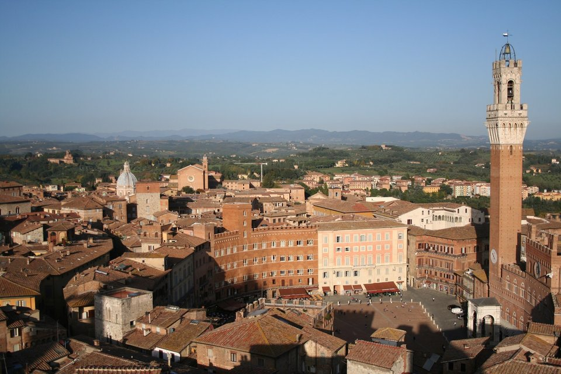

Italy · Siena
Siena audio guide
11 stops · 10 min
Test mode — Paystack test checkout, no live charge.
Billed in ZAR
Unlocks in this browser after payment.
Eleven stops trace Siena from the brick shell of Piazza del Campo up to its striped marble cathedral and museum. Discover medieval civic pride, the ninety-second Palio horse race, and one of the richest inlaid church floors in Italy. Listen here, or get the Earwise app to play it offline as you walk.
Stops
- 1
The shell
Begin at the top of Piazza del Campo to take in the nine-ribbed brick paving symbolizing Siena's medieval Council of Nine.
Free sample: stop 1
Play0:00 / –:–– - 2
The joyous fountain
Stop by Fonte Gaia, the marble fountain rebuilt in the nineteenth century from Jacopo della Quercia's surviving panels.
Script and audio included when you buy - 3
The town hall
Stand below the Palazzo Pubblico, Siena's gothic brick town hall begun in 1297 and still housing city offices.
Script and audio included when you buy - 4
The Torre del Mangia
Look up at the slender Torre del Mangia, built intentionally taller than Florence's Palazzo Vecchio tower.
Script and audio included when you buy - 5
Ninety seconds
Hear how the outer tuff-dusted track hosts the Palio twice each summer in a fierce ninety-second bareback race.
Script and audio included when you buy - 6
The cathedral that was too big
Climb to the Facciatone, the towering unfinished wall of a fourteenth-century cathedral expansion halted by the Black Death.
Script and audio included when you buy - 7
Duccio's Maestà in the cathedral museum
Step inside the Museo dell'Opera before Duccio's huge double-sided Maestà altarpiece from 1311.
Script and audio included when you buy - 8
Black and white
Pause outside Siena Cathedral's glittering black-and-white striped marble façade.
Script and audio included when you buy - 9
The floor and the pulpit
Walk inside the nave to study the fifty-six inlaid marble floor panels and Nicola Pisano's octagonal carved pulpit.
Script and audio included when you buy - 10
The Piccolomini Library
Step into the Piccolomini Library, glowing with Pinturicchio's untouched Renaissance frescoes and illuminated choir books.
Script and audio included when you buy - 11
The Baptistery of San Giovanni
Descend below the choir to the Baptistery of San Giovanni, housing a bronze font sculpted by Donatello and Ghiberti.
Script and audio included when you buy
On the map
All 11 stop pins for this guide are marked. Open map